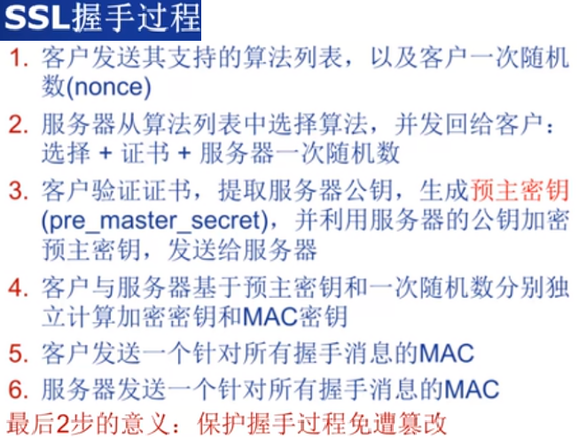

网络安全
Internet 安全威胁
- DDoS
分布式拒绝服务，常见攻击方式有: 资源消耗类: 如Syn Flood、Ack Flood、UDP Flood,通过大量请求消耗正常的带宽和协议栈处理资源的能力， 从而达到服务端无法正常工作的目的。 Syn Flood: 攻击者利用受控主机发送大量的TCP SYN报文，使服务器打开大量的半开连接，占满服务器的连接表， 从而影响正常用户与服务器建立会话，造成拒绝服务。 ACK Flood反射攻击:攻击者可以通过受控主机向大量不同的服务器发送伪造源IP地址的SYN请求， 从而使服务器响应的大量ACK应答数据涌向被攻击目标，占用目标的网络宽带资源并拒绝服务。 UDP Flood使用小包和大包两种方式进行攻击。 小包是指64字节大小的数据包，这是以太网上传输数据帧的最小值，在相同流量下，单包体积越小，数据包的数量就越多。 由于交换机、路由器等网络设备需要对每一个数据包进行检查和校验， 因此使用UDP小包攻击能够最有效的增大网络设备处理数据包的压力，造成处理速度的缓慢和传输延迟等拒绝服务攻击的效果。 大包是指1500字节以上的数据包，其大小超过了以太网的最大传输单元(MTU)，使用UDP大包攻击， 能够有效的占用网络接口的传输宽带，并迫使被攻击目标在接受到UDP数据时进行分片重组，造成网络拥堵， 服务器响应速度变慢。
服务消耗类: 如Connection Flood和HTTP GET攻击，前者利用真实的IP地址向服务器发起大量的连接。 并且建立连接之后很长时间不释放，占用服务器的资源，造成服务器上残余连接(WAIT状态)过多，效率降低，甚至资源耗尽， 无法响应其他客户所发起的链接；后者是和服务器建立正常的TCP连接， 并不断利用脚本程序提交查询、列表等大量耗费服务器数据库资源的请求。
反射攻击: 攻击者通过IP欺骗，将大量僵尸主机的源IP地址伪装成被攻击服务器的IP，然后向开放服务器发送请求， 这些服务器则会向被攻击服务器返回应答报文，从而间接造成DDoS攻击。
防御措施有: 扩容，提高带宽； 异常流量的清洗: 通过DDoS硬件防火墙对异常流量的清洗过滤。 分布式集群防御: 在每个节点服务器配置多个IP地址，并且每个节点能承受不低于10G的DDoS攻击， 如一个节点受攻击无法提供服务，系统将会根据优先级设置自动切换另一个节点， 并将攻击者的数据包全部返回发送点，使攻击源成为瘫痪状态
加密算法
- 非对称加密: 加密和解密使用相同密钥的加密算法
- 对称加密: 加密和解密使用不同密钥的加密算法，也称为公私钥加密
1.由于非对称加密算法的运行速度比对称加密算法的速度慢很多，当我们需要加密大量的数据时， 建议采用对称加密算法，提高加解密速度。 2.对称加密算法不能实现签名，因此签名只能非对称算法。 3.由于对称加密算法的密钥管理是一个复杂的过程，密钥的管理直接决定着他的安全性， 因此当数据量很小时，我们可以考虑采用非对称加密算法。 4.在实际的操作过程中，我们通常采用的方式是：采用非对称加密算法管理对称算法的密钥， 然后用对称加密算法加密数据，这样我们就集成了两类加密算法的优点，既实现了加密速度快的优点， 又实现了安全方便管理密钥的优点。
Web安全
- SSL

VPN与防火墙